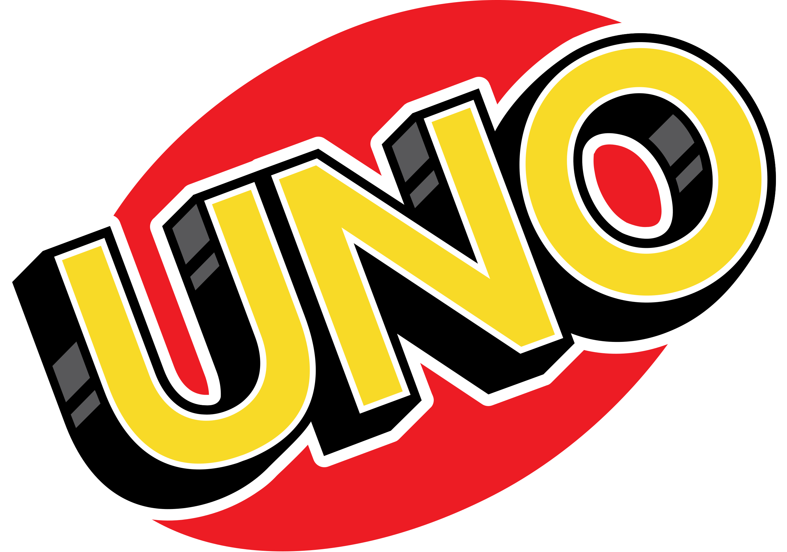
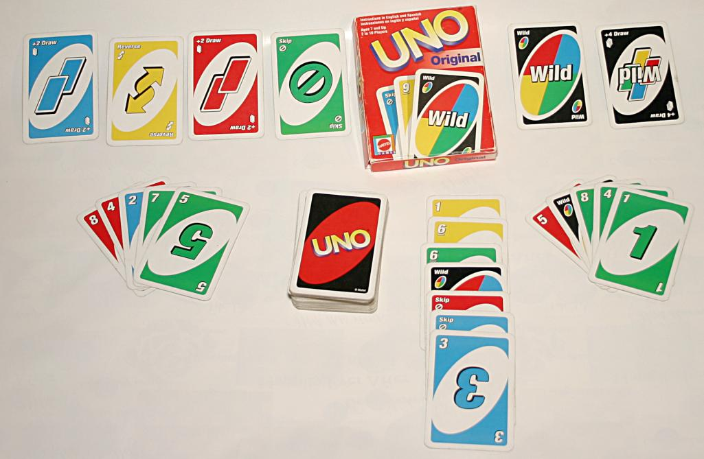

Uno card game
|  |
| Type |
Shedding-type |
| Players |
2-10 players |
| Age range |
7+ |
| Cards |
108 |
Uno is an American shedding-type card game that is played with a specially printed deck.
The game's general principles put it into the crazy eights family of card games, and it is similar to the traditional
European game
mau-mau.
History
The game was originally developed in 1971 by Merle Robbins.
When his family and friends began to play more and more, he spent $8,000 to have 5,000 copies of the game made.
He sold it from his barbershop at first, and local businesses began to sell it as well. Robbins later sold the rights
to Uno to a group of friends headed by Robert Tezak. Tezak formed International Games, Inc., to market Uno,
In 1992, International Games became part of the Mattel family of companies.
Official rules
The aim of the game is to be the first player to score 500 points.
The deck consists of 108 cards: four each of "Wild" and "Wild Draw Four", and 25 each of four colors (red, yellow, green, blue).
Each color consists of one zero, two each of 1 through 9, and two each of "Skip", "Draw Two", and "Reverse".
These last three types are known as "action cards". To start a hand, seven cards are dealt to each player, and the top card of the
remaining deck is flipped over and set aside to begin the discard pile. On a player's turn, they must do one of the following:
- play one card matching the discard in color, number, or symbol
- play a Wild card, or a playable Wild Draw Four card
- draw the top card from the deck, then play it if possible

Similar games
Uno is a member of the shedding family of card games. The shedding family of card games consists of games where the objective
is to get rid of all your cards while preventing the other players from getting rid of their cards.
Where can you buy it?